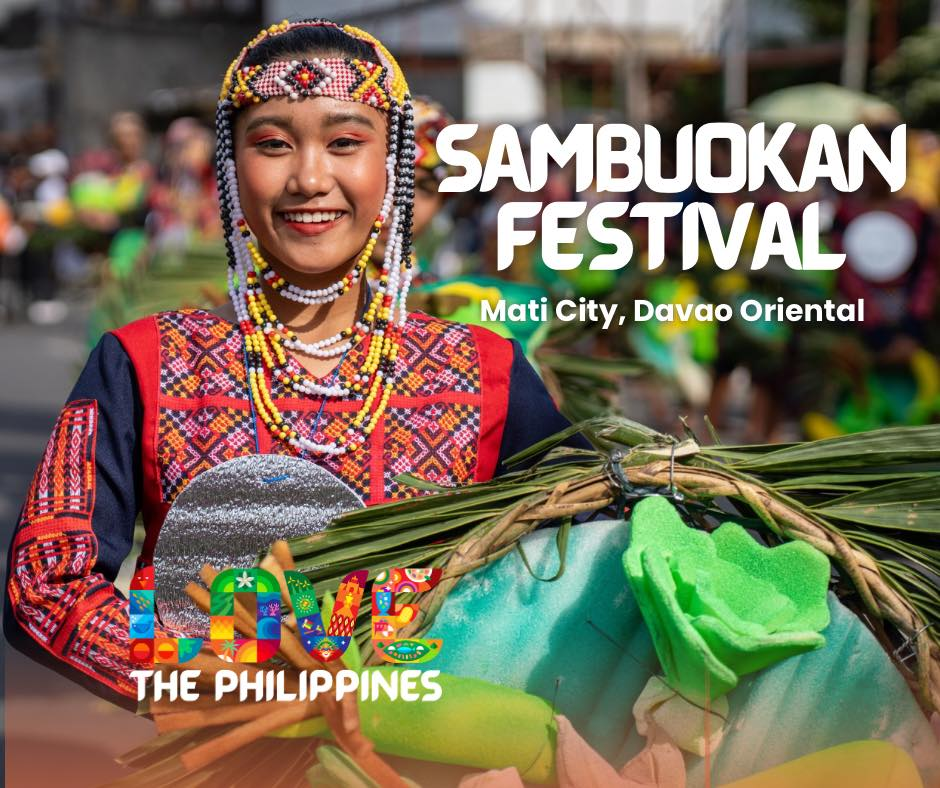

Provincial Festivals

Sambuokan Festival
Mati City (Oct) Unity Festival.

Awuyon Festival
Baganga (Sept) It embodies the spirit of community cooperation, mutual understanding, and solidarity.

Pujada Bay Festival
Mati City (June) It honors the stunning natural beauty and ecological richness of Pujada Bay.

Araw ng Davao Oriental
Davao Oriental wide celebration (1st of July) A unified party with parades, cultural performances, sports, and fireworks marking Davao Oriental's 1967 founding.

Banayan
Banaybanay (Oct) It serves as a vibrant thanksgiving for the town's bountiful rice harvests.

Kalindugan Festival
Caraga (July) Showcases their enduring heritage, resilience, and communal bonds.